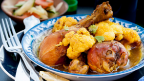
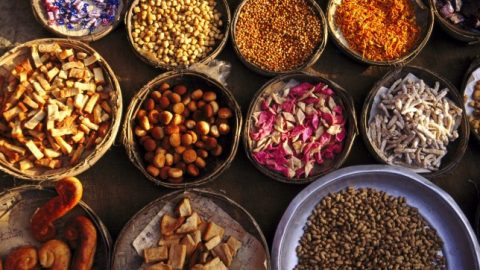

Bangladeshi Chicken Korma

I’m the type of indecisive person who can never pick favorites when it comes to most things in life. But somehow when it comes to food, where I would assume it’s hardest for me to pick favorites given how much I savor eating everything, there is one dish that for me has always ruled supreme....Read More
Easy Chicken Curry With Cauliflower

Make a kickin’ chicken curry tonight! Chicken is a lean, versatile and budget-friendly option for mealtime. A basic chicken curry can be a crowd pleaser and neither dull nor has to be predictable. Take a break from your regular chicken curry and pair it with fresh vegetables. By pairing cauliflower to your chicken curry, you’ll.....Read More
What is Bangladeshi cuisine? The classic spices, staples and desserts of Bangladesh

The concept of Bangladeshi food can be a confusing one. Your local ‘Indian’ curry house serves neither authentic Indian food nor Bangladeshi – despite the fact many are owned by people from Bangladesh. Bangladeshi food is distinct and delicious, with an emphasis on flavoursome spices, heat and fish. Here’s everything you need to know about.... Read More
The unique flavours of Bangladeshi food

A country’s cuisine they say is to know by means of the recipe; the customs and the richness or poverty of a place, and the spirit of those who inhabit it. It is, above all, to participate in the symbolic celebration of the shared repast. Bangladesh- “The country of Bengal” is one of our neighbours,....Read More